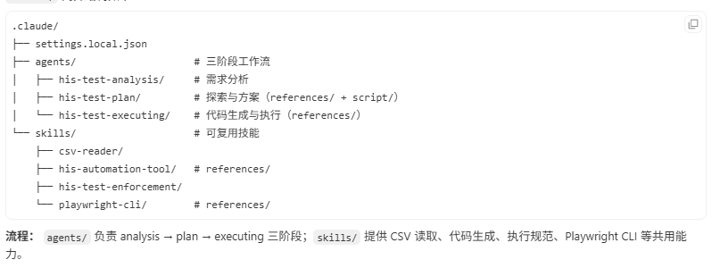

AI 赋能 自动化测试
端到端任务闭环工作流
step-1
需求探索
由业务人员提供操作步骤与业务背景，分阶段提炼可落地的测试需求
step-2
探索验证
根据测试需求分析文档，AI 自主探索操作路径并输出可执行方案
step-3
测试执行
基于探索验证结论，按闭环流水线推进脚本交付
多 Agent 协助
多 Agent 协作架构
测试用例与业务需求经三阶段 Agent 串行流转：分析定规格、探索定方案、执行出脚本，阶段门禁保障质量可控。

his-test-analysis
测试分析 Agent
以 5W2H 解析用例与业务需求，识别路径包含关系并合并递进场景，产出结构化需求分析报告。

his-test-plan
测试设计 Agent
AI 自主探索页面结构与定位器，困难场景升级人机协同，产出技术设计与 Spec 测试计划。

his-test-executing
测试执行 Agent
以业务意图驱动探测实现，生成抗震 Playwright 脚本，专项验证通过后加固清理并交付。

协作机制：三阶段门禁流水线
- 阶段一 → 二 — 需求分析报告经审查批准后，驱动浏览器探索与定位方案设计
- 阶段二 → 三 — 技术设计与 Spec 计划经批准后，转入意图驱动的代码生成与探测
- 探索兜底 — 同一功能自主探索连续失败 ≥3 次时，自动升级人机协同模式
- 完成门禁 — 须通过 Playwright 专项回归验证，方可标记交付完成